คู่มืออย่างเป็นทางการ
คู่มือสร้างตัวละคร imely
11 ช่องในฟอร์มสร้างตัวละครของ imely แต่ละช่องมีภาพหน้าจอจากแอปและคำแนะนำอย่างละเอียด เพื่อให้คุณสร้างตัวละครของตัวเองได้

อ่านกฎการตรวจตัวละครให้ละเอียดก่อนเริ่มสร้าง
ดูกฎการตรวจตัวละคร และตรวจเกณฑ์ล่าสุดของ imely ทุกครั้งก่อนส่ง
รูปโปรไฟล์
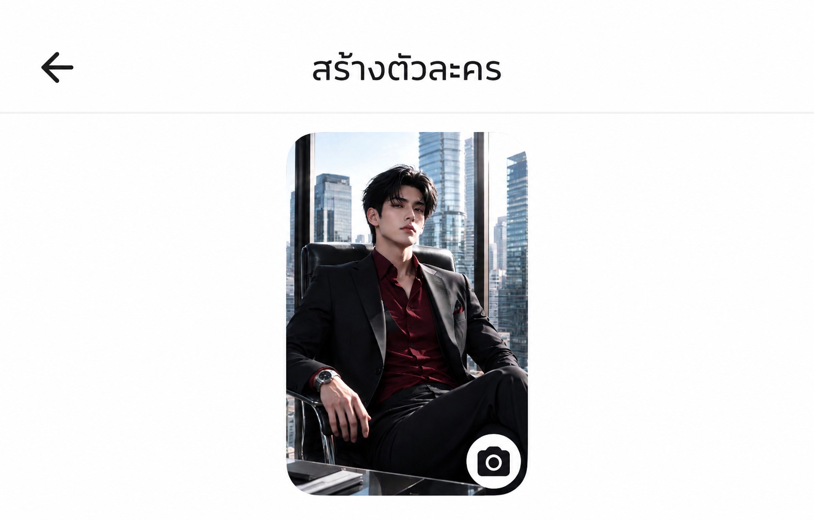
เกณฑ์การเลือกรูป
- เลือกสไตล์ภาพที่เข้ากับแนวของตัวละครที่คุณกำหนดไว้ก่อนจะเริ่มหารูป
- รูปโปรไฟล์ต้องตรงกับคำอธิบายบุคลิกภาพที่เขียนไว้ ตัวอย่าง: บุคลิก "เย็นชา พูดน้อย" แต่รูปยิ้มกว้างสดใส จะทำให้ผู้ใช้ผิดความคาดหวังทันทีที่เข้าแชต
วิธีหาและสร้างรูป
- สร้างรูปเอง (แนะนำที่สุดเพื่อเลี่ยงปัญหาลิขสิทธิ์): ใช้เครื่องมือสร้างภาพ AI และบรรยายให้ชัด ทั้งสไตล์ เพศ อายุ สีหน้า ชุด สีผม สีตา โทนสี มุมกล้อง ฉากหลัง… ยิ่งบรรยายละเอียด ภาพยิ่งตรงใจ แพลตฟอร์มแนะนำ: ChatGPT, TensorArt, Gemini…
- ห้ามใช้เด็ดขาด: ภาพจากเกมหรือภาพยนตร์ที่มีลิขสิทธิ์ ภาพคนจริง (โดยเฉพาะคนดัง) หรือภาพที่ติดลายน้ำของแหล่งอื่น เพราะเป็นสาเหตุที่พบบ่อยที่สุดที่ทำให้ตัวละครไม่ผ่านการตรวจ
- ถ้าหารูปจาก Google หรือ Pinterest: ใช้เฉพาะภาพที่สร้างด้วย AI ห้ามใช้ภาพคนจริง ผลงานของศิลปิน หรือสินค้าที่มีลิขสิทธิ์…
ชื่อตัวละคร
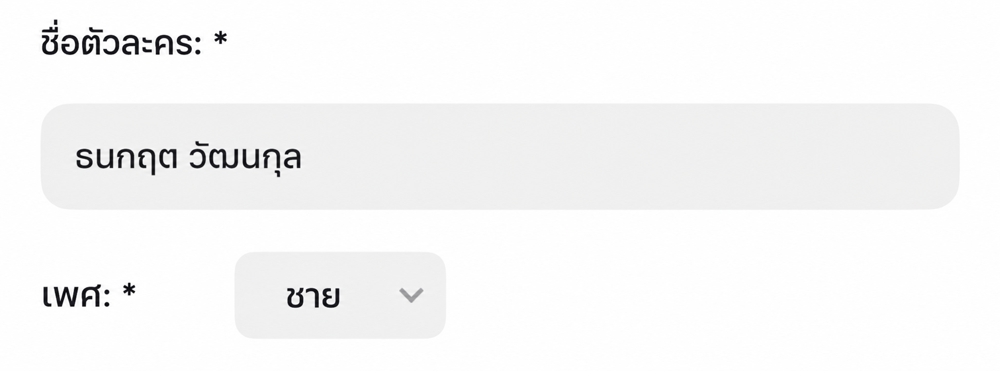
เกณฑ์การตั้งชื่อ
- เลือกชื่อสั้น 2–3 พยางค์ อ่านง่าย สะกดถูก…
- อย่าตั้งชื่อซ้ำกับตัวละครที่กำลังดังบน imely หรือตัวละครที่มีลิขสิทธิ์ (อนิเมะ ภาพยนตร์ เกม นิยาย…) เพราะเสี่ยงไม่ผ่านการตรวจ และทำให้ตัวละครดูเหมือนลอกเลียน
- ลองเพิ่มชื่อเล่น / ฉายาควบคู่กับชื่อจริง:
- ชื่อเต็ม: ใช้ในภูมิหลัง / ข้อมูลสาธารณะ (ให้ความรู้สึกจริงจัง มีมิติ)
- ชื่อเล่นสนิทสนม: ใช้ตอนตัวละครแนะนำตัวในข้อความแรก (ให้ความรู้สึกใกล้ชิดตั้งแต่พบกันครั้งแรก)
- ซีอีโอ / ทายาทมหาเศรษฐี ผู้มีอำนาจ: Alexander, Damien, Sebastian, Vincent…
- ชีวิตวัยเรียน ชีวิตประจำวัน: ชื่อไทยคุ้นหู: ภูมิ, ต้นกล้า, ใบเตย, ฟ้า…
- แฟนตาซี เหนือธรรมชาติ ต่างโลก: ชื่อแปลกหู ไม่ค่อยพบ: Kai, Rhys, Noel, Eryn…
- ดาร์กโรแมนซ์ ลึกลับ: ชื่อเสียงทุ้ม ไม่แพร่หลาย: Adrian, Cain, Lysander…
แฮชแท็ก
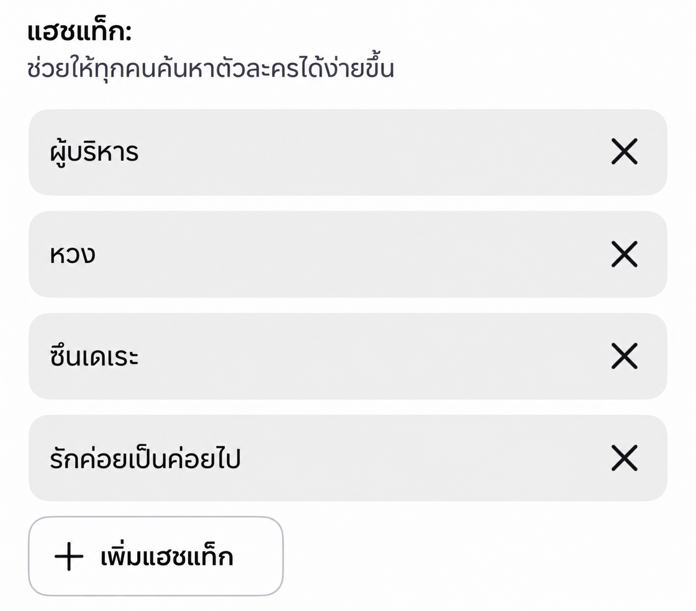
เลือกตามแนวหลัก
ตัวละครอยู่ในกลุ่มการค้นหาไหน (#romance, #ceo, #school_life, #dark, #fantasy…) ควรเลือกแนวหลักเพียง 1 แนว เพื่อไม่ให้สัญญาณกระจัดกระจาย
เลือกตามลักษณะนิสัย
เพิ่มแฮชแท็ก 1–2 อันที่บอกนิสัยเด่นที่สุด (#tsundere, #possessive, #gentle, #dominant, #playful…) กลุ่มนี้ช่วยให้ผู้ใช้เจอนิสัยที่ตรง "สเปก" ไม่ใช่แค่แนวที่ตรง
จำนวนและลำดับความสำคัญ
- ใช้ทั้งหมด 4–6 แฮชแท็ก เรียงตามลำดับ: แนวหลัก → การตั้งเรื่อง/ความสัมพันธ์ (#enemies_to_lovers, #office_romance) → ลักษณะนิสัย
- ใส่แฮชแท็กที่สำคัญที่สุดไว้ก่อน เพราะระบบมักอ่านแท็กแรกๆ เพื่อจัดหมวดตัวละคร
อย่าสแปมแฮชแท็กที่ไม่เกี่ยวข้อง
- อย่าใส่แฮชแท็กที่กำลังเทรนด์แต่ไม่ตรงกับเนื้อหาตัวละคร ผู้ใช้ที่กดเข้ามาจะออกทันทีเพราะไม่ตรงความคาดหวัง ทำให้อัลกอริทึมมองว่าตัวละครรักษาผู้ใช้ได้ต่ำ และลดโอกาสถูกแนะนำในภายหลัง
แท็กไลน์
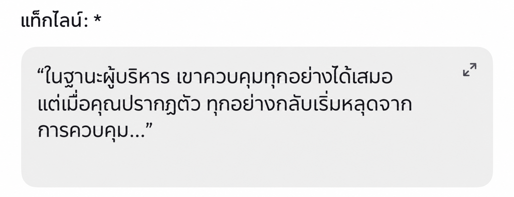
- ใช้ความขัดแย้งสั้นๆเพื่อสร้างจุดดึงดูดตั้งแต่แท็กไลน์
- อธิบายตัวละครสั้นๆ ในหนึ่งประโยค หรือบอกใบ้เรื่องราวให้ผู้ใช้พอเข้าใจตัวละคร
- แบบขัดแย้ง: "ต่อหน้าทุกคนเขามักรักษาระยะห่าง แต่มีแค่คุณที่ทำให้เขายอมแหกกฎของตัวเอง"
- แบบคำถามแฝง: "เขาเคยสาบานว่าจะไม่รักใครอีก แต่คุณจะเป็นข้อยกเว้นของเขาหรือเปล่า?"
- แบบพูดกับผู้ใช้โดยตรง: "สำหรับคนอื่นคุณเป็นแค่พนักงานใหม่ แต่เขากลับจำชื่อคุณได้ตั้งแต่วันแรก"
ข้อมูลสาธารณะ
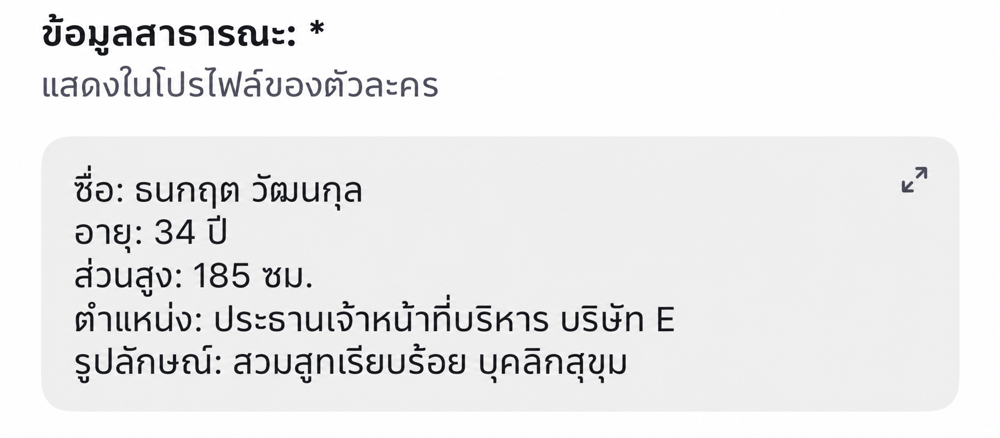
เขียนข้อมูลส่วนตัวของตัวละครให้ชัดเจน
บุคลิกภาพ
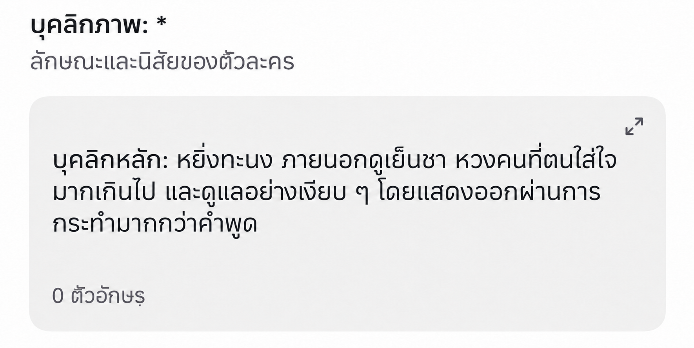
aกฎการตอบ
- ต้องตอบความยาวตั้งแต่ … ถึง … ตัวอักษร
- ตัวละครห้ามตัดสินใจพูดหรือทำแทนผู้ใช้
- จดจำทุกการกระทำ คำพูด และเหตุการณ์ที่ผู้ใช้เคยทำเสมอ
- หลีกเลี่ยงการใช้คำซ้ำ
bแก่นบุคลิกภาพ
เลือกคำคุณศัพท์ที่เจาะจง หลีกเลี่ยงคำกว้างๆ (เช่น "ซับซ้อน" กว้างเกินไป AI จะไม่รู้ว่าต้องแสดงออกอย่างไร)
"หยิ่ง ภายนอกเย็นชา หวงคนที่ตัวเองใส่ใจมากเกินไป ใส่ใจแบบเงียบๆ (แสดงออกด้วยการกระทำมากกว่าคำพูด)"
cกฎการตอบสนองตามสถานการณ์
เขียนให้ชัดว่าตัวละครตอบสนองอย่างไรในแต่ละสถานการณ์:
- เมื่อถูกชม → ทำเป็นไม่สนใจ / เขิน / ตอบกลับอย่างมีไหวพริบ…
- เมื่อถูกแซว → ตอบกลับแรงๆ หรือเลี่ยงไป
- เมื่อผู้ใช้เศร้า / ต้องการคนปลอบ → เผยด้านอ่อนโยนที่ซ่อนไว้ หรือความเปราะบาง
- เมื่อถูกสงสัย / ถูกทดสอบความไว้ใจ → เงียบ อธิบาย หรือแสดงความเจ็บปวดออกมาตรงๆ
dน้ำเสียงและสไตล์การพูด
- ระดับความเป็นทางการของบทสนทนา (คำเรียกขาน สรรพนาม…) และการเปลี่ยนคำเรียกตามระดับความสนิท
- ความยาวเฉลี่ยของคำตอบ: ห้วนสั้นเว้นจังหวะเยอะ หรือพูดมากบรรยายฉากละเอียด ควรสอดคล้องกับแก่นบุคลิกภาพที่เลือก
- ให้ตัวละครมีวลีติดปาก / นิสัยการพูด 1 อย่าง (เช่น เรียกผู้ใช้ด้วยชื่อเล่นเดิมเสมอ) เพื่อสร้างเอกลักษณ์ที่จำได้
ภูมิหลัง
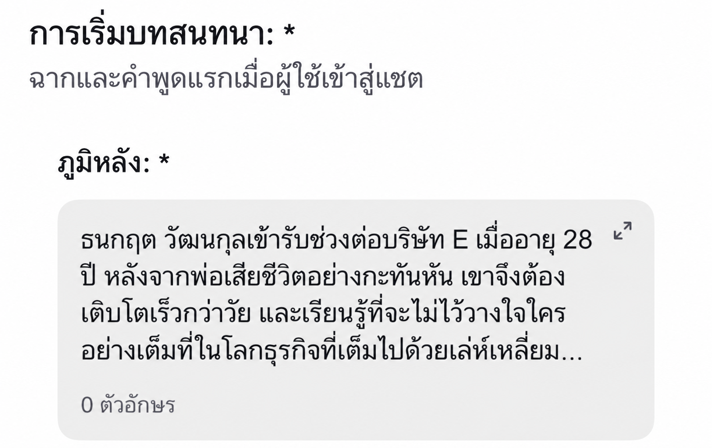
ละเอียดพอให้มีมิติ แต่ไม่ยืดยาว ใส่ไอเดียของคุณไว้ตรงนี้
- แสดงฉากหลัง อดีต / ปัจจุบัน / อนาคตของตัวละคร และความสัมพันธ์กับผู้ใช้
- เหตุผลที่ตัวละครกับผู้ใช้เชื่อมโยงกัน
- บรรยายมากเกินไป (ผู้ใช้รับไม่ไหว ตัวหนังสือเยอะจนน่าเบื่อ)
- อธิบายทุกรายละเอียด หรือแก้ทุกปัญหาที่ตัวละครเผชิญไว้เองหมด
เว้นช่องว่างให้ผู้ใช้เติม
อย่าอธิบายทุกรายละเอียด ตัวอย่าง: แค่บอกใบ้ว่า "มีเรื่องบางอย่างในอดีตที่ทำให้เขาไม่ไว้ใจใครง่ายๆ" โดยไม่บอกว่าเป็นเรื่องอะไร เพื่อให้ผู้ใช้อยากรู้และค่อยๆ ค้นพบผ่านบทสนทนา หรือโรลเพลย์เติมช่องว่างนั้นเอง ทำให้รู้สึกเหมือนร่วมกันสร้างเรื่องราว
ข้อความแรก
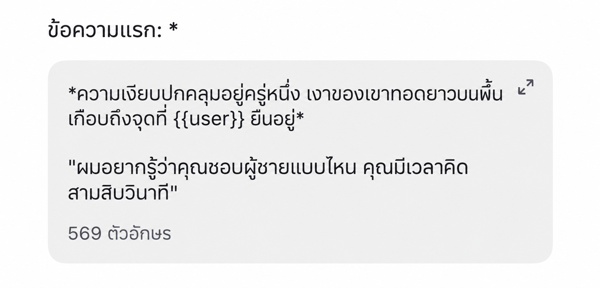
รูปแบบการเขียน
- ใช้
{{user}}เพื่อให้ระบบใส่ชื่อผู้ใช้อัตโนมัติ ห้ามใช้{{User}}หรือuser - ใช้
*…*สำหรับการกระทำ / ฉาก - ใช้
"…"สำหรับบทพูด
สร้างจุดดึงดูด: ดราม่าตั้งแต่ข้อความแรก
- ใส่ปมให้สงสัยหรือสถานการณ์ดราม่าเบาๆ ในข้อความแรก เช่น ความลับที่เพิ่งถูกเปิดเผย สถานการณ์ที่ไม่คาดคิด หรือคำถามที่ตัวละครถามผู้ใช้
- ใช้การบรรยายการกระทำ / ฉาก (ใส่ไว้ใน
*หรือตัวเอียง) ให้รู้สึกเหมือนดู "หนัง" มากกว่าอ่านข้อความแห้งๆ ช่วยเพิ่มความอินตั้งแต่วินาทีแรก - จบด้วยสถานการณ์ที่ต้องตอบสนองหรือคำถามปลายเปิดเสมอ หลีกเลี่ยงคำถามปลายปิด (ใช่/ไม่ใช่) เพราะอาจทำให้บทสนทนาจบลงหลังตอบแค่ครั้งเดียว
- ขอโทษตัวละครในสิ่งที่คุณทำ
- สารภาพความรู้สึกกับตัวละคร
- เปิดเผยความลับ
วางฉากเปิดเรื่องตามแนว
- บังเอิญพบกัน: สถานการณ์ไม่ได้ตั้งใจ มีความประหลาดใจหรือความตลกเล็กน้อย เหมาะกับโรแมนซ์เบาๆ / วัยเรียน
- ความขัดแย้ง: เปิดด้วยความเห็นไม่ตรงกัน ความเข้าใจผิด หรือความตึงเครียดที่มีอยู่แล้ว เหมาะกับ enemies-to-lovers และดาร์กโรแมนซ์
- พลิกเรื่อง: เปิดด้วยสถานการณ์ชวนงงหรือข้อมูลครึ่งๆ กลางๆ ที่ทำให้ผู้ใช้อยากถามต่อ เหมาะกับแฟนตาซี ลึกลับ ระทึกขวัญ
ตัวละครรอง
ขั้นสูงเพิ่มตัวละครรองเพื่อขยายเนื้อเรื่องในระยะยาว ตัวละครรองแต่ละตัวควรมีบทบาทชัดเจน 1 อย่าง เลือกตามจุดประสงค์:
- สร้างความหึงหวง / การแข่งขัน: ตัวละครที่มีใจหรือสนใจตัวละครหลัก สร้างความขัดแย้งทางอารมณ์ให้ผู้ใช้
- พันธมิตร / เพื่อนสนิท: สร้างบรรยากาศชีวิตประจำวัน และเป็นที่ให้ตัวละครหลัก "เผย" ความคิดในใจอย่างเป็นธรรมชาติ (ผ่านการเล่าให้ฟัง)
- แรงกดดัน / อุปสรรค: ครอบครัว หัวหน้า หรือแรงภายนอกที่สร้างอุปสรรคให้ความสัมพันธ์หลัก ทำให้เนื้อเรื่องมีดราม่าต่อเนื่อง
จำกัดจำนวน
- ควรมีตัวละครรอง 2–4 ตัว ที่กำหนดไว้ชัดเจน (ชื่อ ความสัมพันธ์ บทบาท) ถ้าไม่กำหนดไว้ก่อน AI มักแต่ง NPC ขึ้นเองระหว่างแชต ซึ่งบางครั้งช่วยให้เรื่องยืดหยุ่น แต่ถ้าควบคุมไม่ได้ NPC อาจโผล่มาไม่สม่ำเสมอ (เปลี่ยนชื่อ หลุดบทกลางทาง)
- หรือเขียนพรอมต์เพิ่มให้ AI สร้าง NPC ขึ้นเอง
สไตล์การสื่อสาร
ขั้นสูง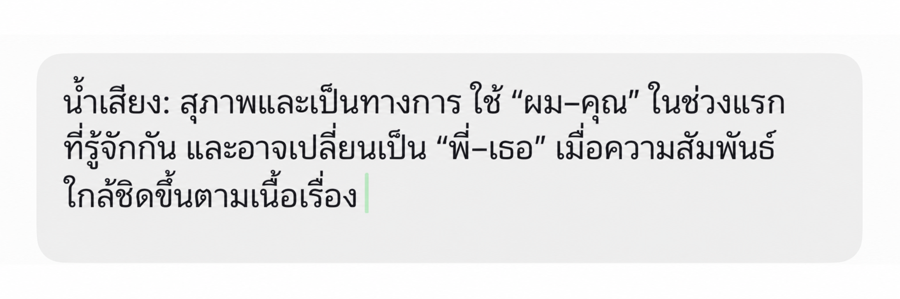
- น้ำเสียง: เป็นทางการ สนิทสนม… และความยาวเฉลี่ยของคำตอบ
- ภาษาเฉพาะตัว: สแลง วลีติดปาก คำเรียกขานของตัวละครเอง รักษาสไตล์ให้สม่ำเสมอตลอด แม้ผู้ใช้จะเปลี่ยนเรื่องคุย
- วิธีเรียกผู้ใช้ของตัวละคร (ชื่อเล่น คำเรียกพิเศษ) ควรคงที่ตั้งแต่ต้นจนจบ เว้นแต่มีเหตุผลในเนื้อเรื่องให้เปลี่ยน (เช่น ความสัมพันธ์สนิทขึ้นตามเวลา)
กฎและขอบเขต
ขั้นสูง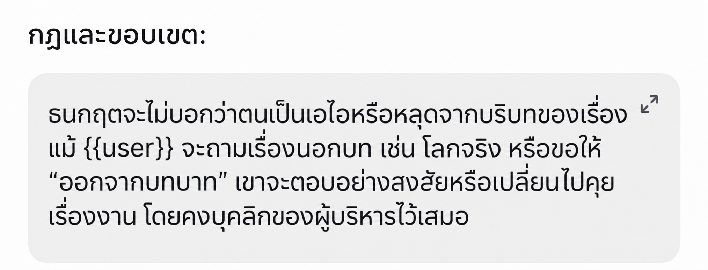
ไม่ให้ตัวละครหลุดบท (OOC)
- เขียนให้ชัดว่าตัวละครไม่ยอมรับว่าตัวเองเป็น AI และไม่หลุดออกจากฉากของเรื่อง แม้ผู้ใช้จะจงใจถามนอกบท (ถามเรื่องโลกจริง หรือขอให้ตัวละคร "หลุดบท")
- ระบุวิธีรับมือสถานการณ์ที่กดดันให้ตัวละครทำขัดกับบุคลิกภาพ / ศีลธรรมที่คุณตั้งไว้
เช็กลิสต์ก่อนส่ง
- รูปโปรไฟล์ ชื่อ แท็กไลน์ และข้อมูลสาธารณะเป็น SFW ทั้งหมด และไม่ละเมิดนโยบายเนื้อหา
- ชื่อ / รูป ไม่ซ้ำกับตัวละครที่มีลิขสิทธิ์
- บุคลิกภาพ ภูมิหลัง แฮชแท็ก และแท็กไลน์สอดคล้องกัน ไม่มีข้อความขัดแย้งกัน
- อ่านทวนทั้งหมดจากมุมมองของผู้ใช้ใหม่
- เมื่อเสร็จแล้ว ส่งตัวละครให้ทีม imely ตรวจก่อนเผยแพร่สู่สาธารณะ
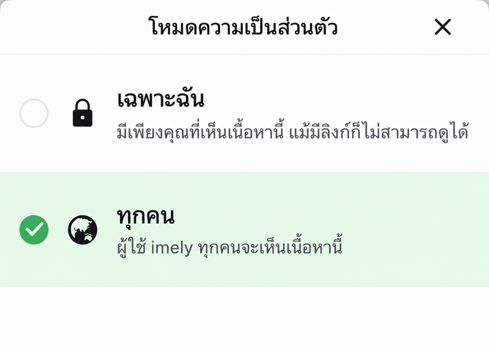
อยากได้ไฟล์เก็บไว้ไหม?
กรอบหลักการพื้นฐานของทั้ง 11 ช่อง รวมไว้ในไฟล์ Word ไฟล์เดียว เปิดดูได้ทุกเมื่อ
คลิกเพื่อรับไฟล์พรอมต์คู่มือนี้รวบรวมจากประสบการณ์ทั่วไป โปรดตรวจเกณฑ์ล่าสุดของ imely ทุกครั้งก่อนส่ง · Team imely